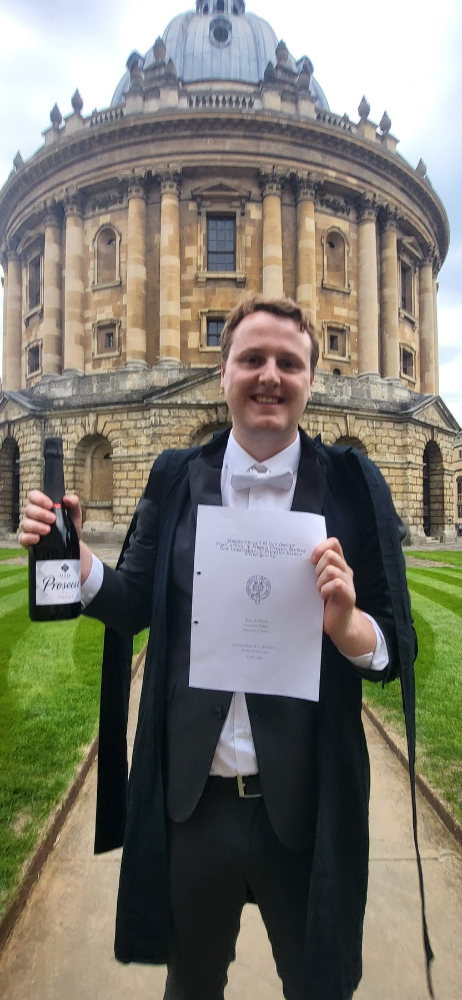
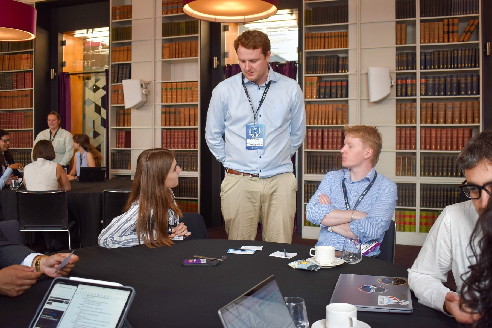
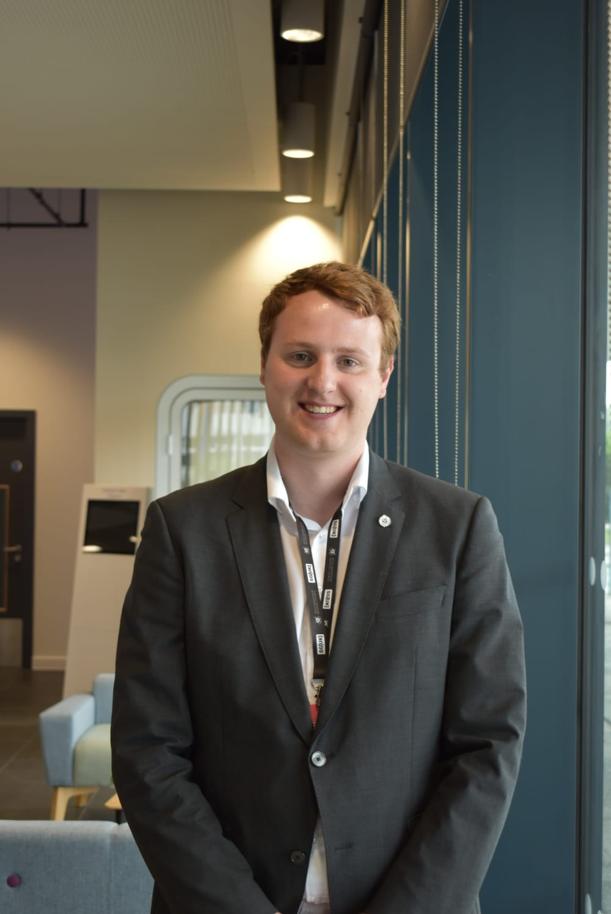

PhD researcher • University of Oxford
Earth, planets, and the stories written in isotope ratios.
I study stable isotope fractionation in minerals, melts, and metallic systems, connecting atomic-scale processes to planetary evolution. My work brings together experiments, ab initio simulation, and science communication across academia and the space community.
Oxford PhD
Mg & Si isotopes
Space outreach
Teaching & mentoring



About
Research, education, and public engagement.
I am a PhD researcher in Earth Sciences at Oxford, focusing on isotope geochemistry, magma-ocean processes, and the early differentiation of planets. My academic work sits alongside a long-standing commitment to outreach, student mentoring, and space education.
Outside the lab, I have helped build space-focused communities, supported student-led initiatives, and worked with international networks to make technical science more open and accessible.
Research
Building a predictive picture of planetary differentiation.
01
Isotope fractionation
Using Mg and Si isotopes to trace bonding environments, mineral transformations, and melt processes at high temperature.
02
Magma oceans
Connecting crystallisation, core formation, and deep-mantle reservoirs to the chemical evolution of terrestrial planets.
03
Experiments + simulation
Combining high-pressure experiments with ab initio molecular dynamics and DFT to generate testable predictions.
Selected work
Publications, talks, and research outputs.
A few representative projects from my PhD and earlier research are shown below. This section can be expanded to include full publication lists, conference abstracts, and thesis chapters.
Equilibrium isotope fractionation of Mg between forsterite, diopside, and melt
Submitted / in review work combining experiments and theoretical modelling.
Isotopic hide-and-seek in the deep mantle
Work on Mg and Si isotope fractionation in magma oceans and primitive mantle heterogeneity.
Goldschmidt and AGU conference presentations
Conference contributions on isotopes, mantle evolution, and deep-Earth processes.
Space education / activities
Making space science engaging, collaborative, and hands-on.
ACHIEVED Academy
Free space engineering education and mission design experience for students, supported by expert speakers.
Oxford Space Network
Community-building through talks, drinks, and informal networking for researchers and students interested in space.
SGAC leadership
International volunteer work across Europe and beyond, with project coordination and student engagement.
Outreach and mentoring
School visits, science fairs, seminar organisation, and support for early-career scientists.
Gallery
Moments from talks, events, and academic life.


Contact
For talks, collaborations, and general enquiries.
Use the form to send either a speaker request or a general contact message. Submissions are delivered to bd520@cam.ac.uk through a hosted form service.
Email
bd520@cam.ac.uk
Request types
Speaker request / General contact